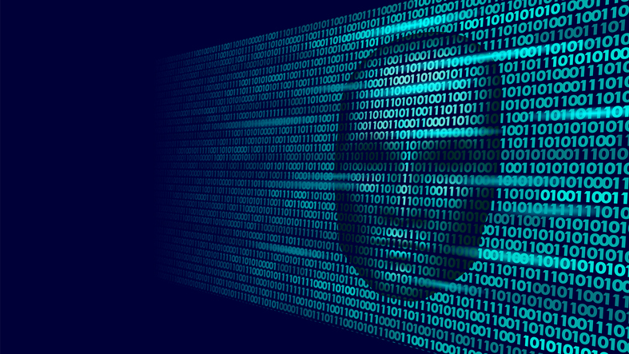

러-우크라 사이버 전쟁으로 취약성 발견
양자 컴퓨팅은 어떻게 암호화를 위협하는가
양자 컴퓨팅은 어떻게 암호화를 위협하는가

양자 컴퓨팅은 여전히 이론적 추정과 실제 응용 사이의 모호한 영역에 머물고 있지만 실제 구현 쪽으로 조금씩 다가가고 있다.
양자 컴퓨터에서 많은 관심을 끄는 사용 사례 중 하나는 현대 인터넷 암호화다.
지금 우리가 아는 것은 비대칭 알고리즘에 대한 양자 공격의 기반이 점점 모양을 갖춰 나가는 중이라는 것이다.
훨씬 더 큰 수에 접근할 수 있는 지점까지 기술이 발전하는 데는 얼마나 걸릴까? 흥미로운 점은 우리가 매일 사용하는 AES와 같은 대칭 알고리즘이 양자 알고리즘에 대해 그렇게 취약하지는 않다는 사실이다.
그로버(Grover) 알고리즘이 여기에 해당한다. 256비트 키가 사용된다는 전제로 이러한 알고리즘을 공격하는 데 필요한 시간을 전통적인 알고리즘보다 더 줄이는 것은 이론적으로도 불가능하다.그런데 대칭적으로 보호되는 통신의 대부분은 비대칭적 교환을 통해 키를 설정한다.
따라서 오늘날 대부분의 웹 트래픽은 첨단 양자 컴퓨팅 공격에 취약하다. 상호작용이 시작되는 시점에 설정된 키를 공격자가 발견할 수 있다면, 대칭 암호화를 아무리 많이 해봐야 소용이 없다.따라서 웹 보안 인프라에 대한 위협은 현실이다. 여기에 작용하는 역학에 대해 잠깐 생각해 보자. 가장 먼저 고려할 것은 순수한 경제성과 접근성이다. 지금으로서는 돈이 넘쳐나는 기업만 이러한 기술에 접근할 수 있다. IBM, 구글, 그리고 중국의 연구자는 실용적인 시스템 생산에서 앞서가기 위해 경쟁 중이며 대학의 연구도 다양하게 진행되고 있다.
물론 드러나지는 않지만 미국 국가 안전국(NSA)과 같은 정부 기관도 가만히 있지는 않을 것이다. 실제로 NSA는 공개 암호화와 양자 컴퓨팅을 독자적으로 연구하고 있다.